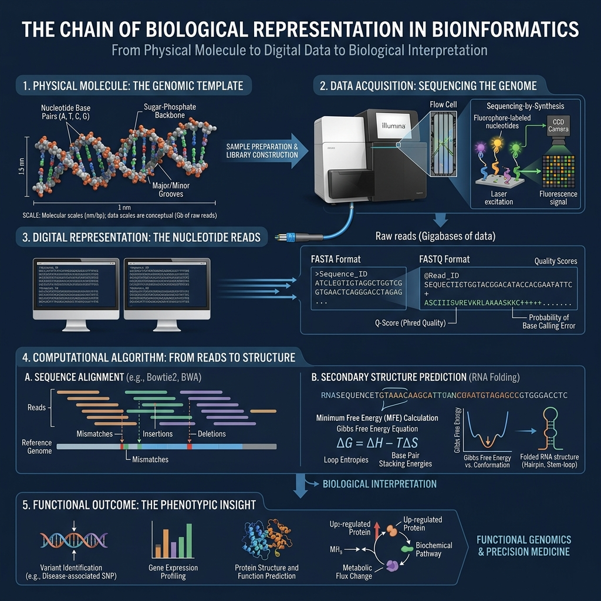

Bioinformatics algorithms do not operate on abstract letters alone. They are models of biological molecules. If your model of the molecule is wrong, the computational result can be internally consistent but biologically wrong.
Why This Matters
A computational error does not necessarily cause a program to crash. A script can be syntactically correct and computationally successful while producing biologically incorrect results. Understanding representation is crucial to avoiding plausible but wrong conclusions.
What Problem Does This Solve?
It solves the "silent error" problem in bioinformatics pipelines. By understanding the chain of representations from physical molecule to statistical result, we can accurately diagnose where errors propagate and validate the biological meaning of a computational output.
THE CORE MECHANICS: A CHAIN OF REPRESENTATION

Figure 1: The continuous translation from physical molecule to computational model and biological insight.
1. The Real Biological System vs. Computational Representation
We start with a physical biological object X (e.g., an actual RNA molecule). Because we cannot put a physical molecule into a computer, we create a representation X̂ (e.g., a FASTA sequence). Importantly, X̂ ≠ X. The sequence lacks atoms, solvent interactions, and conformational dynamics, but ideally X̂ ≈ X for the specific question we are asking.
X̂ ≈ X
f(X̂) → Ŷ
Our computational model f(X̂) produces a prediction Ŷ. If our representation is wrong, the error propagates mathematically: error = Ŷ - Y = f(X̂) - f(X). A sophisticated algorithm cannot compensate for an incorrect biological input representation.
2. Thermodynamics vs. Kinetics in Computation
Algorithms rely on mathematical models of physics and chemistry. Thermodynamics asks which state is energetically favored, described by the Gibbs free energy equation:
ΔG = ΔH - TΔS
Kinetics asks how quickly the system moves between states, often described by rates of reaction. Minimum free-energy algorithms (like RNA folding) use these principles to optimize structures, but must account for the fact that real molecules occupy ensembles of states, defined by Boltzmann probabilities:
P_i ∝ e^{-G_i/(RT)}
SUMMARY OF COMPUTATIONAL MODELS
Model Family
Equation / Concept
Question Answered
Thermodynamics
ΔG = ΔH - TΔS
Which state is thermodynamically favored?
Statistical Mechanics
S = k_B ln(Ω)
How does the number of accessible microscopic states relate to entropy?
Kinetics
v = d[RNA]/dt
How quickly is RNA being produced?
Alignment Scoring
Score = ∑s(x_i, y_i) + gap penalties
How similar are two sequences according to our chosen scoring model?
Representation
error = f(X̂) - f(X)
What happens when the computational representation differs from the true biological input?
THE BIOINFORMATICS BRIDGE
RNA-Seq Differential Expression (e.g., DESeq2)
DESeq2 quantifies differential gene expression from count matrices. This requires precise representation because transcript coordinates must map perfectly to genomic references, factoring in splicing and strand orientation. If an annotation mismatch occurs upstream, DESeq2 will calculate pristine statistics on completely incorrect count data, yielding a plausible but biologically false conclusion. By ensuring rigorous representation upstream, bioinformaticians ensure that the statistical power of DESeq2 is actually applied to reality.
RNA Structure Prediction
RNA secondary structure predictors (e.g., RNAfold) compute the minimum free energy (MFE) conformation of an RNA sequence. They use nearest-neighbor thermodynamic parameters (ΔH, ΔS) because base pairing alone does not dictate stability in an aqueous solvent. If a sequence is fed without correct strand orientation or chemical context (like treating DNA identical to RNA), the optimization algorithm will confidently output a structure that is thermodynamically impossible in vivo. Understanding these thermodynamic models allows researchers to critically evaluate if the predicted structure is biologically plausible.